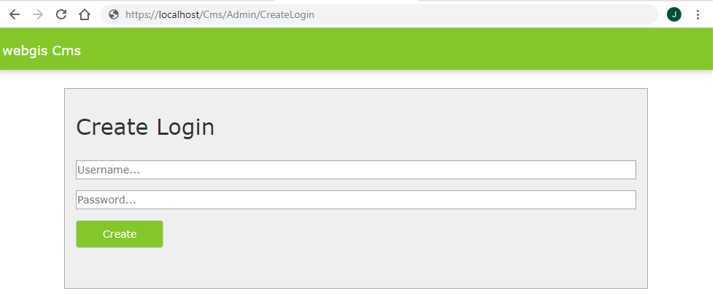
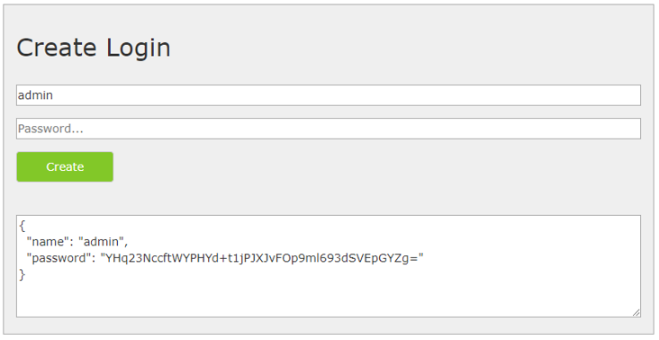

Configuration of the CMS application¶
File _config/cms.config¶
The CMS application is configured via the file webgis-cms/_config/cms.config.
This is a JSON file (JavaScript Object Notation), a structured data format that is independent of JavaScript. When editing the file, make sure that it remains valid JSON. In particular, no comments may be inserted, and keys must be written as strings in quotation marks.
Note
Note on JSON syntax
Attributes and values are separated by
:, e.g.:"force-https": falseObjects (with multiple attributes) are placed in curly braces:
{ … }Arrays are marked with square brackets:
[ … ]. The individual values are separated by commas.An array can list objects (e.g.
cms-items):[ { "object1": ... }, { "object2": ... } ]An array can list individual values (strings, numbers) (e.g.
http-get):[ "url1", "url2" ]A backslash
\is a special character in a string in JSON. To actually specify a backslash, a double\\must be used (e.g. in paths). Otherwise the configuration file is no longer valid JSON!
The template has the following format:
{
"shared-crypto-keys-path": "C:\\apps\\webgis/local/webgis-repository/security/keys",
"company": "",
"elasticsearch-endpoint": null,
"force-https": false,
"services-default-url-scheme": "http://",
"webgis-portal-instance": "http://localhost:5002",
"cms-display-url": "https://myserver.com/cms",
"cms-items": [
{
"id": "webgis-release-default",
"name": "WebGIS Release Default",
"path": "C:\\apps\\webgis/local/webgis-repository/cms/param/webgis-release-default",
"scheme": "webgis",
"deployments": [
{
"name": "default",
"target": "C:\\apps\\webgis/local/webgis-repository/cms/publish/cms-default.xml",
"replacement-file": "",
"postEvents": {
"commands": [],
"http-get": ["http://localhost:5001/cache/clear"]
}
}
]
},
{
"id": "webgis-custom",
"name": "WebGIS Custom",
"path": "C:\\apps\\webgis/local/webgis-repository/cms/param/webgis-custom",
"scheme": "webgis",
"deployments": [
{
"name": "default",
"target": "C:\\apps\\webgis/local/webgis-repository/cms/publish/cms-custom.xml",
"replacement-file": "",
"postEvents": {
"commands": [],
"http-get": ["http://localhost:5001/cache/clear"]
}
}
]
}
]
}
Below is an overview of the most important configuration parameters.
Section Root Element¶
Attribute |
Description |
|---|---|
|
The internal URL to the WebGIS Portal. This parameter is required when CMS nodes should be authorized. Via this URL, the CMS application retrieves the available users and groups (e.g. AD users/groups). Since this query happens directly server-to-server, an internal URL can also be used here. If both applications are on the same server, |
|
This optional parameter is helpful if the CMS is operated behind a reverse proxy server and the application cannot automatically determine which URL is visible to the user. In this case, the desired external URL can be specified here. |
With a Web CMS, multiple trees can be managed. An object is created in the cms-items array for each tree. The value of cms-items must be an array that contains individual cms-item objects.
A cms-item object has various attributes. The two highlighted values (path, target), for example, specify:
path: where the root of the CMS tree is located.target: where a CMS is published to.
Section cms-item¶
Attribute |
Description |
|---|---|
|
A unique ID for the CMS. It should consist only of lowercase letters and numbers (no umlauts). |
|
A descriptive name for the CMS. |
|
Path to the root directory of the CMS tree. |
|
Must always be set to |
|
If secrets are to be accessed in this CMS, a password dialog appears. The password required for access can be set here. This value can also be omitted or left empty — the dialog then still appears in the CMS, but must be confirmed without any input. |
|
An array of deployment objects. Multiple deployments (1:n) can be created per tree. The result of a deployment is a Example of deployments: [
{
"deployment": "Deployment 1"
},
{
"deployment": "Deployment 2"
}
]
Multiple deployments can be helpful for generating different XML files for test, failover, training, and production systems. |
Section deployments¶
Attribute |
Description |
|---|---|
|
A descriptive name for the deployment (e.g. localhost, Development, Training, Test, Production). |
|
The path for the CMS file. The CMS creates an <add key="cmspath_my-cms" value="{path-to-cms.xml}" />
Results in the URL: Uploading CMS XML files has the advantage that WebGIS CMS does not need direct access to the file system of the WebGIS API application. Danger In this case, however, a client and a secret must be defined to ensure that the upload is only performed by an authorized CMS instance. |
|
An arbitrary client and an arbitrary secret can be defined here. The secret should be a secure password with at least 32 characters. For the WebGIS API to accept the upload, a section |
|
Path to a replacement file (replacement file from an old CMS) that should be used for this deployment. |
|
If this value is set to |
|
An array of events that should be executed after a successful build. |
|
Specifies the environment for the deployment. This is relevant, for example, for |
Section postEvents¶
Attribute |
Description |
|---|---|
|
A list of command-line commands that are executed after the CMS is built. This can be useful if the generated CMS file should be copied to another storage location. Use case: If multiple WebGIS instances are operated behind a load balancer, the XML file can be automatically distributed to all instances this way. |
|
A list of HTTP GET requests that are executed after the CMS is built. This can be used, for example, to trigger a Note If the CMS.xml is transferred to the WebGIS API via upload, a manual |
Additional attributes¶
Attribute |
Description |
|---|---|
|
An abbreviation for the company. Optionally, a |
|
Should always be set to |
|
Specifies which protocol ( |
|
If permissions are configured in the CMS, the CMS must query a WebGIS Portal instance in the background to determine available login options and users. This query can also be performed directly in the Web CMS by specifying the instance manually. If the value is predefined here, this increases usability, since the information does not need to be entered again each time. |
File _config/datalinq.config¶
The CMS application also contains DataLinq.Code for editing DataLinq endpoints, queries and views. The actual DataLinq engine runs inside a WebGIS API instance.
Which instances are shown for editing via the CMS start page can be controlled via the file _config/datalinq.config:
{
"instances": [
{
"name": "Local WebGIS API",
"description": "My local WebGIS test and development API",
"url": "https://my-server/webgis-api"
}
],
"useAppPrefixFilters": true,
"autoLogin": "author"
}
Overview of the most important configuration parameters¶
Attribute |
Description |
|---|---|
|
An array in which multiple DataLinq API instances can be defined. If one of these instances is called via the CMS start page, a login window appears. There you must log in with a subscriber for the respective API instance. Note The respective API instance can specify in its configuration ( |
|
If this option is set to Naming convention for endpoints: The endpoints are organized according to the following scheme: {APPLICATION}-{db/lov/...}-{etc...}
Before the first Typical endpoint structure: An application usually has several endpoints, including:
If one or more applications are selected when the application starts, only their endpoints are shown in the tree. This improves performance and clarity, especially when many applications exist. The filter can be reset at any time by clicking on the “DataLinq.Code” heading above the tree. |
File _config/settings.config¶
General settings for the WebGIS CMS application can be stored in this optional file. One use case is the configuration of a logging file or the setup of a proxy server.
If external services are integrated, a proxy server may be required for access. With the following settings, a proxy server that is used for all internet access can be defined via this file:
{
"logging_connection_string": "C:\\cms\\cms-logging.csv",
"proxy": {
"use": true,
"server": "webproxy.mydomain.com",
"port": 8080,
"user": "", // optional
"password": "", // optional
"domain": "", // optional
"ignore":"localhost;my-intranet.com;.my-domain.com$;"
}
}
Overview of the most important configuration parameters¶
Attribute |
Description |
|---|---|
|
Path to the logging file. This allows you to track which users made changes in the CMS, and when and by whom a CMS was last published. If the file has the extension Note The file can be read via DataLinq (endpoint with connection type TextFile) to make the logs available in the browser. |
|
Allows the configuration of a proxy server for internet access.
|
File _config/application-security.config¶
By default, the Web CMS is accessible to all users who know the URL. To restrict access with a user name and password, this file can be used.
If the file does not exist, the CMS is freely accessible.
Danger
Security risk when used on the internet!
This mechanism only offers simple protection via user name and password. It is not suitable for use on the internet, since it can be bypassed using malicious methods.
If the Web CMS must be installed on a public server, it should not be integrated directly into IIS and not exposed via the internet.
Recommended security measures:
The CMS should be operated only on the intranet, since simple protection is usually sufficient here.
If remote access is required, the CMS should not run as a classic web application in IIS. Instead, it should be run as a local desktop application on a jump host.
For secure authentication, Windows authentication or OpenID Connect should be used. These methods are described below.
Secured user access¶
Setting up password-protected access to the CMS¶
To protect access to the CMS with a user name/password protection, proceed as follows:
Open the CMS in the browser with the URL
/admin/CreateLogin.
Note
This URL can only be called if no
application-security.configfile exists yet. If the file already exists, you must log in to access this page.Enter a user name and password into the form and click
Create.

Copy the generated code snippet and insert it into the file
_config/application-security.config:{ "users": [ { "name": "admin", "password": "tcwXYZ55..." } ] }
Note
The
usersfield is an array. Multiple users can be created and added separated by commas:{ "users": [ { "name": "admin", "password": "tcwXYZ55..." }, { "name": "admin2", "password": "dA8NR..." } ] }
At the next call of the Web CMS, a login with user name and password is required.
Tip
If access remains unprotected, it may be necessary to restart the application pool in IIS.
In addition to the classic login via a login form, the CMS can also be secured via Windows authentication or OpenID Connect.
Windows authentication¶
For a Windows-based login, application-security.config can be configured as follows:
{ "identityType": "windows", "users": [ { "name": "domain\\user1" }, { "name": "domain\\user2" }, { "name": "domain\\admin123" } ] }
This configuration allows three Windows domain users to access the CMS.
Tip
For this method to work, the web application in IIS must be configured so that Windows authentication is enabled and anonymous login is disabled.
Login via OpenID Connect¶
If you want to use OpenID Connect-compliant authentication, application-security.config can look as follows:
{ "identityType": "oidc", "oidc": { "authority": "https://server.com/identity", "clientId": "cms-local-oidc", "clientSecret": "secret123", "requiredRole": "gis-admin-webgis-cms" } }
With this configuration, only users with the role gis-admin-webgis-cms are allowed to access the CMS.
Tip
For this method to work, the following prerequisites must be met:
The client ID and the client secret must be registered on the OpenID server.
At least
openid,profileandrolemust be enabled as scopes.